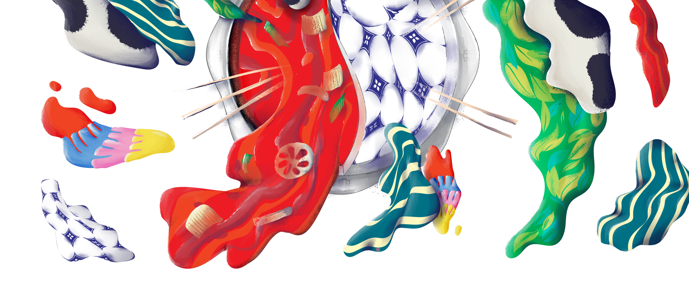
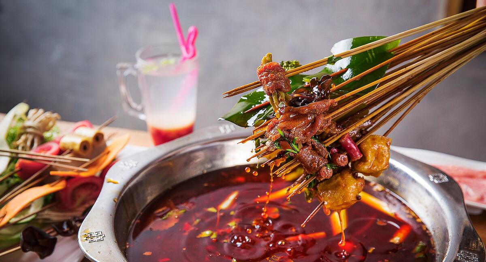
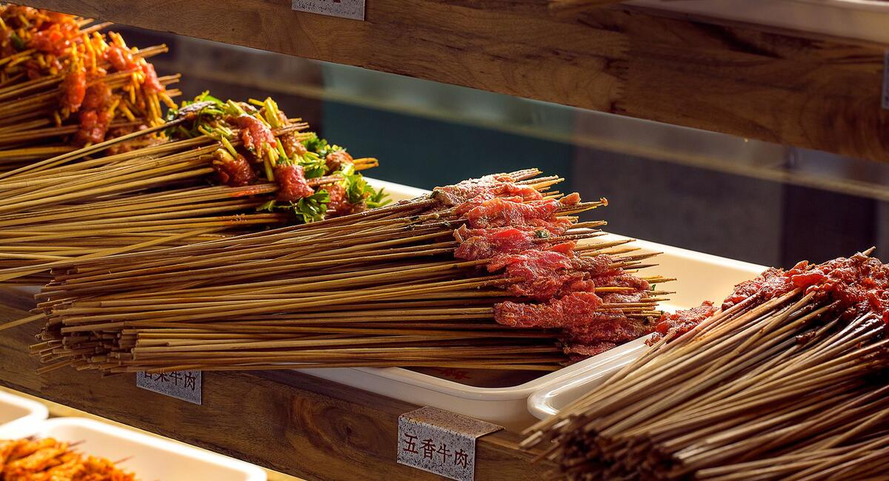
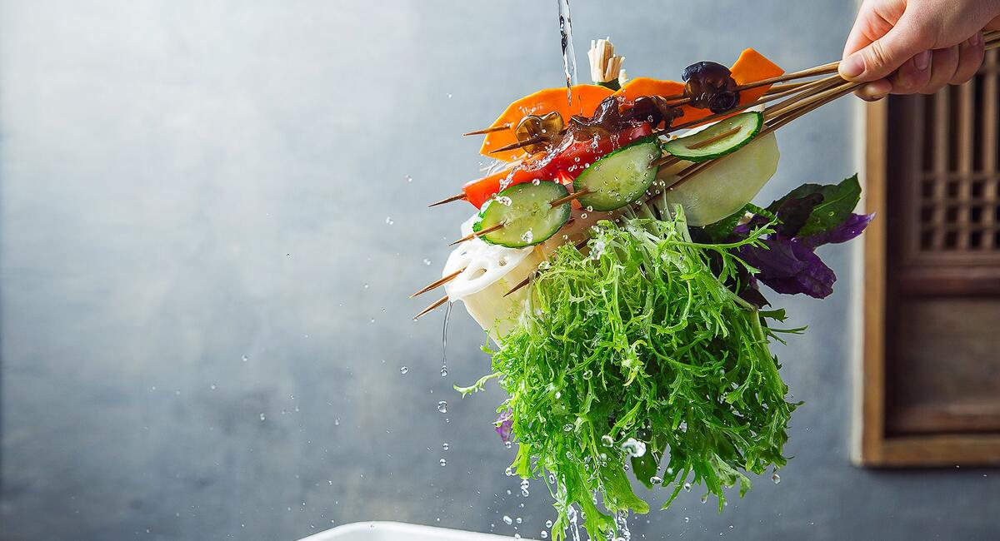
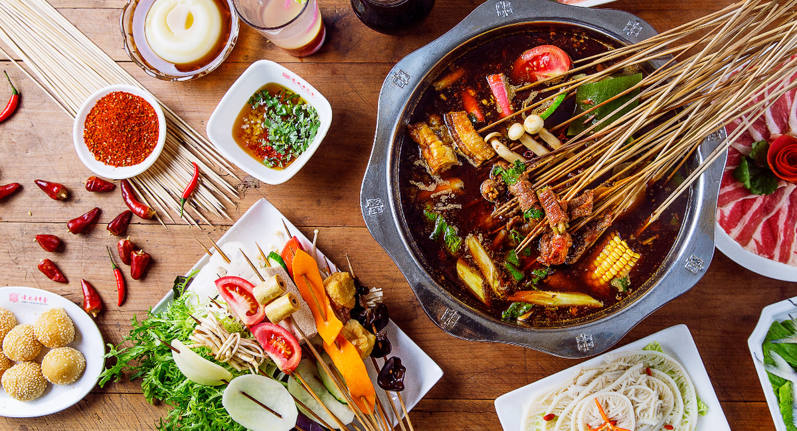

Welcome to Yuan's Hot Pot 钱小楠
Welcome to Yuan’s Hot Pot (Yuan’s Chuan Chuan Xiang)! Hot Pot is the most popular cuisine in China. Try out the authentic taste of Chengdu Hot Pot. Yuan’s Hot Pot Amsterdam is the direct operation restaurant of Yuan’s Chuan Chuan Xiang which established in 1996. Chuan Chuan Xiang is one branch of hot-pot-family that put food on the bamboo skewers, While the hot pot is kept simmering, skewers are placed into the pot and are cooked at the table.
Skewers with fresh ingredients such as vegetables, bean curd, meat and fish are placed into one pot of hot delicious broth to cook all together at the table. Whether it’s the taste of home or a culinary adventure: it’s the hot pot that brings us together. So: bring your friends, family and start your adventure. We know the best things happen over hot pot.
Our story Hotpot Slider
- 
- 
- 
Spice up your day
We are the first restaurant in Amsterdam with Chengdu Hot Pot (Chuan Chuan Xiang) concept. We provide the family secret recipe soup base and dishes.
The soup base of Yuan’s Hot Pot consists of premium ingredients, and it is prepared from a secret recipe that has been passed down from generations.
Then choose your sticks! We have a very diverse selection of fresh ingredients which comes from local Dutch farms and we use as much seasonal produce as possible.
See our menuHotpot
Where Amsterdam meets Chengdu
By sharing Chengdu’s love for food & creative culture with Amsterdam: the city that loves music, art, freedom, subculture, history, food and is open-minded, alternative and tolerant, we hope to spice up your life. A little bit of Chengdu and a little bit of Amsterdam in the pot.